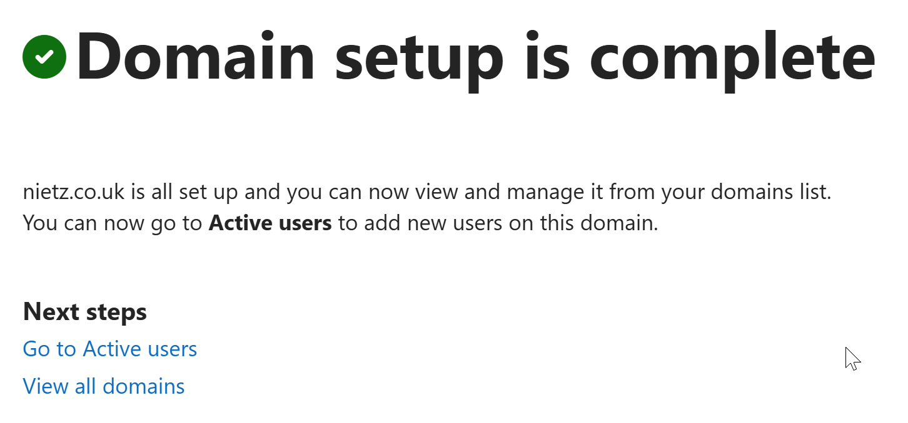
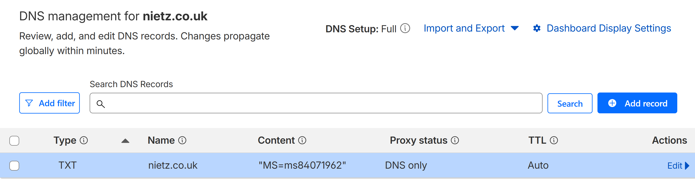
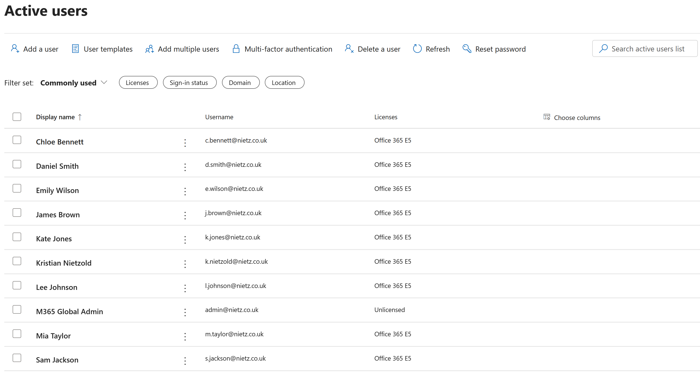
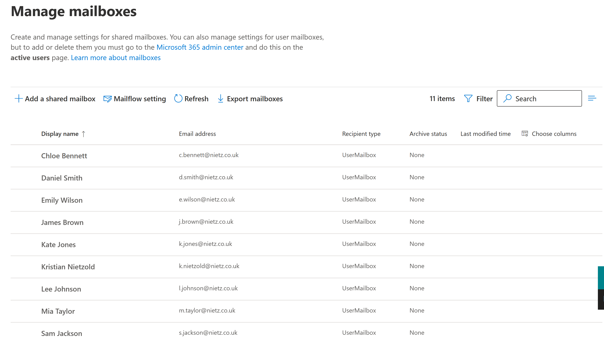
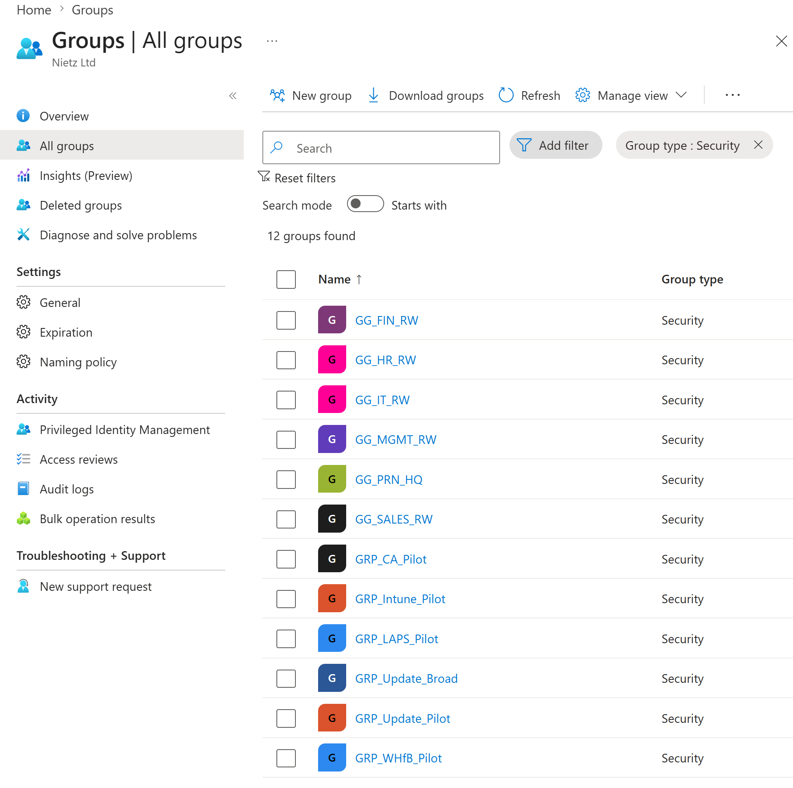
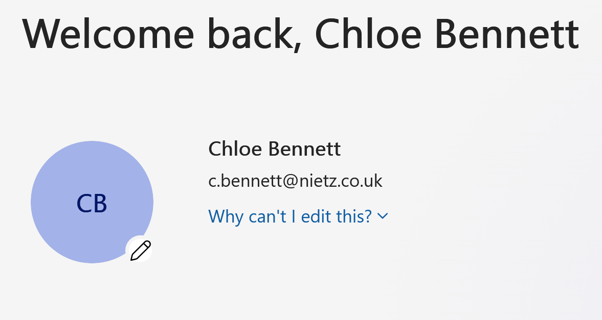
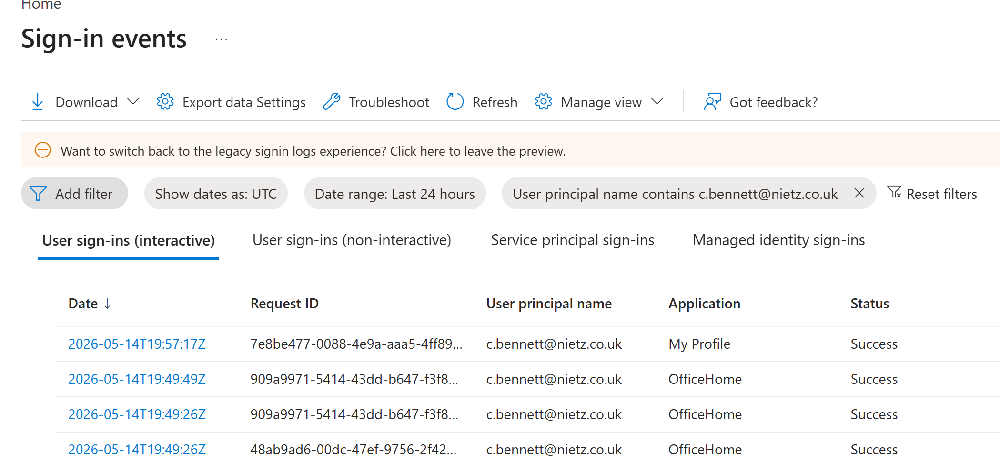

Lab 05: Microsoft 365 User Admin
Established the Microsoft 365 cloud identity baseline for Nietz Ltd by verifying the public domain, creating users and security groups, assigning licences, confirming mailbox provisioning and validating a successful user sign-in.
Overview
In this lab, I extended the existing Nietz Ltd environment from the on-premises Active Directory and file services foundation into Microsoft 365. The previous labs established DC1, CL1, FS1, the corp.nietz.co.uk Active Directory domain, department users, security groups, file shares, and Group Policy access control.
This lab created the matching Microsoft 365 cloud administration baseline using the public domain nietz.co.uk. The cloud users were created as Microsoft 365 accounts for this stage; hybrid identity synchronisation is intentionally reserved for the later hybrid identity lab.
Objective
The objective was to prepare Nietz Ltd for Microsoft 365 administration by verifying the tenant domain, creating cloud users with @nietz.co.uk sign-in names, assigning licences, confirming Exchange Online mailbox provisioning, creating cloud security groups for later policy targeting, and validating a successful user sign-in through Entra sign-in logs.
Environment
| Component | Value |
|---|---|
| Company | Nietz Ltd |
| On-premises AD Domain | corp.nietz.co.uk |
| Public / Tenant Domain | nietz.co.uk |
| Domain Controller | DC1 - 192.168.10.10/24 |
| File Server | FS1 - 192.168.10.20/24 |
| Domain Client | CL1 - 192.168.10.100/24 |
| Cloud User Licence | Office 365 E5 trial licence |
| Global Admin Account | admin@nietz.co.uk |
| Daily Admin Account | k.nietzold@nietz.co.uk |
| Cloud Security Groups | GG_IT_RW, GG_HR_RW, GG_FIN_RW, GG_SALES_RW, GG_MGMT_RW, GG_PRN_HQ, and pilot GRP_ groups |
Configuration
1. Microsoft 365 Domain Verification
I added and verified nietz.co.uk in Microsoft 365 so users could be created with the same public sign-in domain used in the Active Directory UPN plan from Lab 03.

nietz.co.uk was successfully set up.user@nietz.co.uk instead of using the fallback onmicrosoft.com domain.2. DNS Verification Record
I confirmed the Microsoft domain verification TXT record in Cloudflare for nietz.co.uk.

nietz.co.uk.3. Cloud Users and Licence Assignment
I created the Microsoft 365 cloud users for the Nietz Ltd departments and assigned Office 365 E5 licences to the operational users and daily admin account.

@nietz.co.uk sign-in names and Office 365 E5 licences.4. Mailbox Provisioning
I confirmed in Exchange admin center that licensed users had Exchange Online user mailboxes provisioned.

5. Cloud Security Groups
I recreated the department and pilot security group model in Entra ID so cloud services can use the same group-based administration pattern prepared in the on-premises labs.

6. User Sign-In Validation
I signed in as Chloe Bennett to confirm that a standard cloud user could access the Microsoft 365 account experience using the @nietz.co.uk sign-in name.

c.bennett@nietz.co.uk account.7. Entra Sign-In Log Validation
I confirmed the successful Chloe Bennett sign-in in Entra ID sign-in events.

c.bennett@nietz.co.uk.Validation
The lab was validated when nietz.co.uk was verified in Microsoft 365, the Cloudflare TXT record confirmed domain ownership, Microsoft 365 users existed with @nietz.co.uk usernames, Office 365 E5 licences were assigned, Exchange Online mailboxes were provisioned, cloud security groups existed in Entra ID, and Chloe Bennett successfully signed in.
The Entra sign-in events confirmed successful Microsoft 365 sign-ins for c.bennett@nietz.co.uk, providing admin-side validation of the user-facing sign-in test.
Key Technical Outcomes
This lab established the Microsoft 365 cloud identity and licensing baseline for Nietz Ltd while keeping the same naming model created in Active Directory.
It also demonstrated the relationship between domain verification, cloud user creation, licence assignment, Exchange Online mailbox provisioning, Entra security groups, and sign-in log validation.
Summary
- I verified
nietz.co.ukin Microsoft 365 using a Cloudflare TXT record. - I created Microsoft 365 cloud users with
@nietz.co.uksign-in names. - I assigned Office 365 E5 licences to the daily admin and operational users.
- I confirmed Exchange Online mailbox provisioning for the licensed users.
- I created department and pilot security groups in Entra ID.
- I validated Chloe Bennett's Microsoft 365 sign-in and confirmed the successful sign-in in Entra logs.